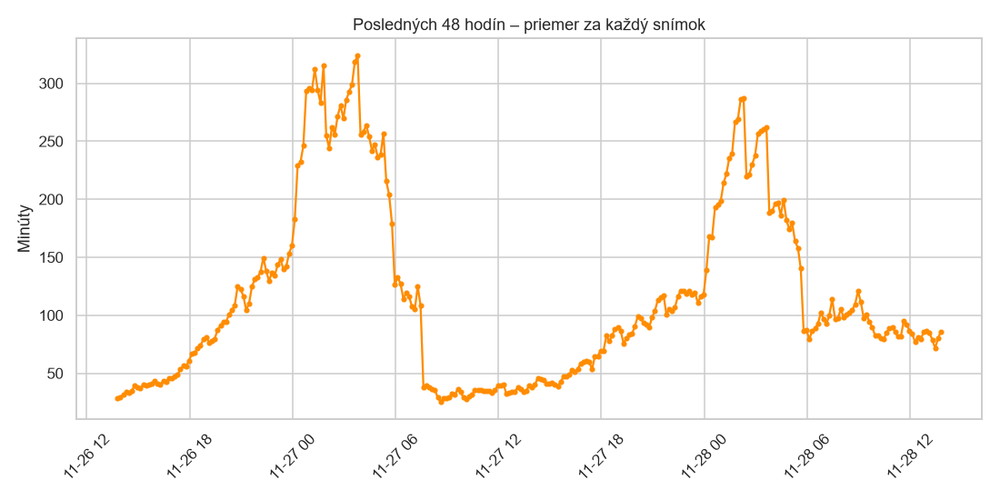

📈 Historický vývoj (denný, 7- a 30-dňový priemer, trend)

Obdobie dát: 23.10.2026 08:57 – 15.11.2026 23:07


| Zaznamov | Priemer | Median | P90 | Max | Std | Meskaju_pct | Nad5_pct | Nad15_pct | Nad60_pct | |
|---|---|---|---|---|---|---|---|---|---|---|
| Mesiac | ||||||||||
| 2026-10 | 17260 | 66.60 | 20.00 | 120.00 | 2176 | 193.21 | 96.23 | 85.27 | 67.36 | 13.24 |
| 2026-11 | 48560 | 98.91 | 23.00 | 146.00 | 2579 | 261.52 | 94.49 | 86.80 | 73.56 | 21.13 |


| Zaznamov | Priemer | Median | P90 | Max | Std | Meskaju_pct | Nad5_pct | Nad15_pct | Nad60_pct | |
|---|---|---|---|---|---|---|---|---|---|---|
| Den | ||||||||||
| Pondelok | 7445 | 72.94 | 22.00 | 129.00 | 1374 | 194.99 | 94.59 | 82.94 | 71.27 | 15.07 |
| Utorok | 12362 | 99.44 | 24.00 | 241.00 | 2085 | 246.75 | 96.35 | 88.93 | 77.04 | 17.97 |
| Streda | 9291 | 123.65 | 26.00 | 141.00 | 2579 | 327.10 | 95.59 | 87.96 | 74.55 | 29.88 |
| Štvrtok | 7937 | 76.64 | 24.00 | 131.00 | 1379 | 185.46 | 94.58 | 88.91 | 76.69 | 24.38 |
| Piatok | 10671 | 93.07 | 21.00 | 136.00 | 2545 | 263.79 | 97.34 | 89.03 | 72.36 | 15.90 |
| Sobota | 8723 | 89.58 | 20.00 | 148.00 | 2542 | 260.03 | 92.53 | 83.61 | 63.40 | 16.87 |
| Nedeľa | 9391 | 69.03 | 21.00 | 123.00 | 1491 | 185.88 | 92.56 | 81.76 | 66.59 | 14.08 |


| Zaznamov | Priemer | Median | P90 | Max | Std | Meskaju_pct | Nad5_pct | Nad15_pct | Nad60_pct | |
|---|---|---|---|---|---|---|---|---|---|---|
| Cast_dna | ||||||||||
| Noc (0–5) | 9477 | 197.35 | 22.00 | 1,085.00 | 2441 | 432.76 | 89.36 | 81.12 | 61.77 | 25.79 |
| Ranná špička (6–9) | 9909 | 50.43 | 21.00 | 120.00 | 2579 | 177.06 | 94.21 | 85.83 | 71.01 | 15.02 |
| Dopoludnie/popoludnie (10–15) | 19871 | 48.55 | 22.00 | 124.00 | 2542 | 113.06 | 95.78 | 86.93 | 73.76 | 15.93 |
| Popoludňajšia špička (16–19) | 13697 | 70.93 | 23.00 | 143.00 | 2096 | 169.20 | 96.12 | 86.30 | 74.32 | 18.19 |
| Večer (20–23) | 12866 | 127.95 | 24.00 | 417.00 | 2545 | 287.70 | 97.08 | 90.02 | 74.78 | 22.97 |


| Percentil | Minuty |
|---|---|
| P25 | 15.00 |
| P50 | 22.00 |
| P75 | 44.00 |
| P90 | 139.00 |
| P95 | 492.00 |
| P99 | 1,347.00 |
| P99.9 | 2,192.00 |
| Zaznamov | Podiel_% | |
|---|---|---|
| Kategoria | ||
| Včas (0) | 3329 | 5.06 |
| 1–5 min | 5623 | 8.54 |
| 6–15 min | 9520 | 14.46 |
| 16–30 min | 23873 | 36.27 |
| 31–60 min | 10930 | 16.61 |
| 60+ min | 12545 | 19.06 |


| Zaznamov | Priemer | Median | P90 | Max | Std | Meskaju_pct | Nad5_pct | Nad15_pct | Nad60_pct | |
|---|---|---|---|---|---|---|---|---|---|---|
| Stanica_Poloha | ||||||||||
| Barcapred 4 min. | 20 | 1,378.90 | 1,373.00 | 1,373.00 | 1491 | 26.39 | 100.00 | 100.00 | 100.00 | 100.00 |
| Barcapred 14 min. | 21 | 1,378.62 | 1,373.00 | 1,373.00 | 1491 | 25.75 | 100.00 | 100.00 | 100.00 | 100.00 |
| Barcapred 3 min. | 12 | 1,374.00 | 1,374.00 | 1,374.00 | 1374 | 0.00 | 100.00 | 100.00 | 100.00 | 100.00 |
| Barcapred 13 min. | 12 | 1,373.83 | 1,374.00 | 1,374.00 | 1374 | 0.58 | 100.00 | 100.00 | 100.00 | 100.00 |
| Štrbské Plesoteraz | 93 | 1,184.03 | 1,211.00 | 1,955.00 | 2172 | 577.94 | 100.00 | 100.00 | 100.00 | 100.00 |
| Kapušany pri Prešoveteraz | 329 | 1,112.72 | 1,112.00 | 1,968.00 | 2212 | 634.53 | 100.00 | 100.00 | 100.00 | 96.96 |
| Barcapred 6 min. | 5 | 1,062.80 | 1,097.00 | 1,371.60 | 1372 | 328.96 | 100.00 | 100.00 | 100.00 | 100.00 |
| Nižnáteraz | 104 | 1,022.27 | 995.00 | 1,899.70 | 2080 | 622.11 | 100.00 | 100.00 | 100.00 | 94.23 |
| Bratislava-Petržalkateraz | 362 | 964.89 | 748.50 | 2,200.50 | 2571 | 809.93 | 100.00 | 100.00 | 98.90 | 85.36 |
| Barcateraz | 3134 | 668.86 | 647.00 | 1,237.00 | 1485 | 407.60 | 100.00 | 100.00 | 99.71 | 91.77 |
| Kútyteraz | 328 | 552.79 | 153.00 | 1,871.00 | 2540 | 741.61 | 100.00 | 100.00 | 89.33 | 55.49 |
| Trenčínteraz | 311 | 503.98 | 247.00 | 1,352.00 | 1953 | 547.49 | 100.00 | 100.00 | 99.36 | 69.77 |
| Bratislava-Petržalkapred 2 min. | 6 | 468.67 | 31.00 | 1,358.00 | 2579 | 1,034.86 | 100.00 | 100.00 | 83.33 | 33.33 |
| Podunajské Biskupiceteraz | 147 | 419.47 | 124.00 | 1,236.00 | 1562 | 495.68 | 100.00 | 100.00 | 99.32 | 51.02 |
| Košiceteraz | 553 | 312.19 | 53.00 | 1,002.80 | 1372 | 403.47 | 100.00 | 100.00 | 97.29 | 48.82 |
| Trenčínpred 10 min. | 7 | 306.71 | 31.00 | 805.80 | 1953 | 725.95 | 100.00 | 100.00 | 100.00 | 14.29 |
| Podunajské Biskupicepred 3 min. | 6 | 281.83 | 24.00 | 803.50 | 1569 | 630.63 | 100.00 | 100.00 | 100.00 | 16.67 |
| Trenčínpred 11 min. | 6 | 272.67 | 49.00 | 738.50 | 1352 | 529.96 | 100.00 | 100.00 | 100.00 | 33.33 |
| Michaľanyteraz | 95 | 270.57 | 43.00 | 1,099.00 | 1253 | 404.57 | 100.00 | 100.00 | 87.37 | 42.11 |
| Nižná Myšľateraz | 53 | 261.87 | 153.00 | 697.80 | 851 | 240.25 | 100.00 | 100.00 | 100.00 | 73.58 |
| Čaňateraz | 196 | 261.77 | 46.00 | 968.00 | 1343 | 378.36 | 100.00 | 100.00 | 99.49 | 41.84 |
| Podhájskateraz | 14 | 223.71 | 265.00 | 290.70 | 360 | 111.59 | 100.00 | 100.00 | 100.00 | 78.57 |
| Michaľanyprešiel stanicou teraz | 7 | 221.57 | 42.00 | 528.00 | 873 | 308.25 | 100.00 | 100.00 | 100.00 | 42.86 |
| Kútypred 8 min. | 13 | 215.62 | 17.00 | 33.60 | 2542 | 699.03 | 100.00 | 100.00 | 76.92 | 7.69 |
| Kysakteraz | 58 | 215.22 | 178.00 | 411.40 | 517 | 156.66 | 100.00 | 100.00 | 93.10 | 70.69 |
| Zaznamov | Priemer | Median | P90 | Max | Std | Meskaju_pct | Nad5_pct | Nad15_pct | Nad60_pct | |
|---|---|---|---|---|---|---|---|---|---|---|
| Stanica_Poloha | ||||||||||
| 0 | 863 | 0.00 | 0.00 | 0.00 | 0 | 0.00 | 0.00 | 0.00 | 0.00 | 0.00 |
| 1 | 1188 | 5.45 | 1.00 | 14.00 | 100 | 7.70 | 56.23 | 38.97 | 7.74 | 0.17 |
| Výh. Ružín | 43 | 7.60 | 2.00 | 18.40 | 61 | 12.68 | 86.05 | 32.56 | 13.95 | 2.33 |
| 6 | 549 | 7.62 | 4.00 | 12.00 | 85 | 11.70 | 100.00 | 25.68 | 7.83 | 1.46 |
| Žilina | 53 | 7.85 | 1.00 | 24.00 | 61 | 12.86 | 50.94 | 33.96 | 20.75 | 1.89 |
| 2 | 1029 | 8.58 | 1.00 | 25.00 | 66 | 11.04 | 100.00 | 35.47 | 26.43 | 0.10 |
| 5 | 640 | 8.62 | 3.00 | 27.00 | 71 | 13.80 | 100.00 | 19.53 | 13.91 | 0.94 |
| 7 | 419 | 8.65 | 5.00 | 16.20 | 87 | 11.34 | 100.00 | 32.22 | 10.74 | 0.95 |
| 4 | 808 | 8.70 | 3.00 | 28.00 | 80 | 14.47 | 100.00 | 21.53 | 15.10 | 1.24 |
| 9 | 301 | 8.90 | 6.00 | 10.00 | 75 | 9.73 | 100.00 | 72.09 | 6.31 | 1.66 |
| 3 | 925 | 9.05 | 2.00 | 33.00 | 60 | 13.09 | 100.00 | 29.30 | 22.05 | 0.00 |
| 8 | 338 | 9.10 | 6.00 | 14.60 | 80 | 11.22 | 100.00 | 67.16 | 10.06 | 2.37 |
| 10 | 248 | 9.75 | 8.00 | 12.00 | 90 | 9.29 | 100.00 | 90.73 | 6.05 | 1.21 |
| 11 | 245 | 10.13 | 8.00 | 12.00 | 84 | 9.71 | 100.00 | 99.59 | 4.90 | 1.63 |
| Pezinok | 19 | 10.42 | 5.00 | 26.80 | 45 | 12.44 | 84.21 | 42.11 | 21.05 | 0.00 |

| Zaznamov | Priemer | Median | P90 | Max | Std | Meskaju_pct | Nad5_pct | Nad15_pct | Nad60_pct | |
|---|---|---|---|---|---|---|---|---|---|---|
| Vlak | ||||||||||
| REx 7781smer Bratislava-Petržalka | 126 | 1,260.75 | 1,291.00 | 2,311.00 | 2545 | 782.70 | 100.00 | 100.00 | 98.41 | 91.27 |
| Os 8102smer Štrbské Pleso | 94 | 1,194.59 | 1,216.00 | 1,964.70 | 2176 | 583.86 | 100.00 | 100.00 | 100.00 | 100.00 |
| Os 9217smer Bardejov | 113 | 1,136.29 | 1,122.00 | 2,050.00 | 2217 | 654.63 | 100.00 | 100.00 | 100.00 | 96.46 |
| Os 9108smer Prešov | 106 | 1,091.77 | 1,102.00 | 1,942.00 | 2162 | 615.23 | 100.00 | 100.00 | 100.00 | 97.17 |
| REx 7720smer Bratislava-Petržalka št. - Wien Hauptbahnhof (in Wbf | 176 | 1,066.15 | 876.00 | 2,296.00 | 2579 | 805.62 | 100.00 | 100.00 | 100.00 | 93.18 |
| Os 9209smer Bardejov | 123 | 1,056.17 | 1,012.00 | 2,028.00 | 2217 | 682.98 | 100.00 | 100.00 | 99.19 | 97.56 |
| Os 7923smer Trstená | 108 | 1,004.12 | 985.00 | 1,923.70 | 2085 | 641.28 | 100.00 | 100.00 | 98.15 | 91.67 |
| Os 2616smer Kúty | 193 | 860.83 | 630.00 | 2,178.00 | 2542 | 848.43 | 100.00 | 100.00 | 97.93 | 64.25 |
| Os 5315smer Trenčín | 184 | 808.96 | 758.00 | 1,600.00 | 1953 | 550.07 | 100.00 | 100.00 | 100.00 | 91.85 |
| EC 189 HORNÁDsmer Čaňa št. hr. - Budapest-Keleti | 1183 | 692.41 | 657.00 | 1,257.00 | 1374 | 411.41 | 100.00 | 100.00 | 99.92 | 92.56 |
| EC 191 HORNÁDsmer Čaňa št. hr. - Budapest-Keleti | 1153 | 688.05 | 657.00 | 1,250.40 | 1377 | 411.18 | 100.00 | 100.00 | 100.00 | 92.63 |
| EC 193 HORNÁDsmer Čaňa št. hr. - Budapest-Keleti | 1106 | 686.36 | 647.00 | 1,289.50 | 1491 | 420.12 | 100.00 | 100.00 | 99.91 | 92.59 |
| Os 4348smer Bratislava hlavná stanica | 111 | 583.69 | 493.00 | 1,352.00 | 1569 | 513.80 | 100.00 | 100.00 | 100.00 | 73.87 |
| EC 186 HORNÁDsmer Košice | 119 | 412.24 | 163.00 | 1,114.80 | 1344 | 437.91 | 100.00 | 100.00 | 99.16 | 59.66 |
| Os 10035smer Trenčianska Teplá | 23 | 389.83 | 394.00 | 402.00 | 405 | 11.75 | 100.00 | 100.00 | 100.00 | 100.00 |
| Os 3249smer Púchov | 82 | 304.37 | 279.00 | 628.00 | 657 | 218.14 | 100.00 | 100.00 | 100.00 | 75.61 |
| REx 7701smer Bratislava-Petržalka | 32 | 298.91 | 278.00 | 532.00 | 623 | 194.09 | 100.00 | 100.00 | 100.00 | 81.25 |
| Os 3207smer Púchov | 95 | 295.56 | 275.00 | 581.00 | 758 | 203.82 | 100.00 | 100.00 | 100.00 | 81.05 |
| Ex 10037smer Rusovce št. hr. - Banja | 16 | 261.75 | 274.00 | 361.50 | 367 | 81.02 | 100.00 | 100.00 | 100.00 | 100.00 |
| REx 1949smer Košice | 32 | 225.53 | 212.00 | 480.00 | 517 | 170.58 | 100.00 | 100.00 | 96.88 | 68.75 |
| Zaznamov | Priemer | Median | P90 | Max | Std | Meskaju_pct | Nad5_pct | Nad15_pct | Nad60_pct | |
|---|---|---|---|---|---|---|---|---|---|---|
| Vlak | ||||||||||
| mešká 30-59 minút | 2513 | 3.45 | 2.00 | 8.00 | 53 | 4.52 | 77.36 | 16.83 | 2.83 | 0.00 |
| mešká 60 a viac minút | 2513 | 7.78 | 3.00 | 25.80 | 100 | 14.00 | 77.68 | 27.97 | 13.05 | 1.31 |
| Ex 618 TATRAN | 2524 | 15.96 | 7.00 | 53.00 | 79 | 19.60 | 80.74 | 55.51 | 29.28 | 5.59 |
| Ex 620 TATRAN | 2524 | 19.29 | 7.00 | 60.00 | 141 | 31.61 | 81.50 | 65.49 | 26.86 | 9.98 |
| Ex 610 TATRAN | 2524 | 17.72 | 11.00 | 63.00 | 85 | 21.39 | 81.70 | 65.53 | 39.58 | 10.94 |
| mešká 15-29 minút | 2513 | 8.48 | 7.00 | 14.00 | 66 | 6.71 | 95.98 | 66.10 | 8.75 | 0.04 |
| Ex 614 TATRAN | 2524 | 17.56 | 12.00 | 49.00 | 86 | 20.18 | 82.92 | 70.88 | 34.51 | 6.02 |
| Ex 621 TATRAN | 2524 | 25.26 | 18.00 | 66.00 | 83 | 20.31 | 96.04 | 84.67 | 61.13 | 10.62 |
| mešká 5-14 minút | 2513 | 18.10 | 19.00 | 26.00 | 57 | 7.16 | 97.21 | 94.83 | 66.89 | 0.00 |
| mešká do 5 minút | 2513 | 59.97 | 64.00 | 79.00 | 93 | 19.67 | 96.74 | 96.66 | 93.39 | 62.20 |
| Os 14280 NADsmer Brodské | 9 | 15.00 | 15.00 | 15.00 | 15 | 0.00 | 100.00 | 100.00 | 0.00 | 0.00 |
| Os 2718smer Vrbovce št. hr. - Velká nad Veličkou | 8 | 15.00 | 15.00 | 15.00 | 15 | 0.00 | 100.00 | 100.00 | 0.00 | 0.00 |
| Os 2722smer Vrbovce št. hr. - Velká nad Veličkou | 10 | 15.00 | 15.00 | 15.00 | 15 | 0.00 | 100.00 | 100.00 | 0.00 | 0.00 |
| REx 7769smer Bratislava-Petržalka | 5 | 15.00 | 15.00 | 15.00 | 15 | 0.00 | 100.00 | 100.00 | 0.00 | 0.00 |
| Os 5113smer Nové Zámky | 8 | 15.12 | 15.00 | 15.30 | 16 | 0.35 | 100.00 | 100.00 | 12.50 | 0.00 |

| Zaznamov | Priemer | Median | P90 | Max | Std | Meskaju_pct | Nad5_pct | Nad15_pct | Nad60_pct | |
|---|---|---|---|---|---|---|---|---|---|---|
| Typ_vlaku | ||||||||||
| EC | 5039 | 494.13 | 387.00 | 1,221.20 | 1491 | 455.14 | 100.00 | 100.00 | 98.49 | 68.74 |
| REX | 2798 | 172.13 | 26.00 | 381.00 | 2579 | 436.34 | 100.00 | 100.00 | 92.46 | 23.41 |
| OS | 15807 | 98.56 | 23.00 | 138.00 | 2542 | 288.35 | 100.00 | 100.00 | 90.68 | 14.68 |
| RJ | 1878 | 66.73 | 30.00 | 146.00 | 1253 | 120.22 | 100.00 | 100.00 | 95.47 | 19.54 |
| EN | 558 | 65.70 | 25.00 | 150.90 | 486 | 98.49 | 100.00 | 100.00 | 93.01 | 19.53 |
| RA | 1450 | 51.23 | 30.00 | 139.00 | 259 | 55.60 | 100.00 | 100.00 | 93.66 | 16.21 |
| R | 5537 | 51.18 | 28.00 | 131.00 | 873 | 69.11 | 100.00 | 100.00 | 93.84 | 14.54 |
| SC | 361 | 42.89 | 22.00 | 50.00 | 257 | 61.00 | 100.00 | 100.00 | 91.97 | 8.03 |
| EX | 19607 | 32.46 | 18.00 | 120.00 | 419 | 40.62 | 90.07 | 79.67 | 58.18 | 15.12 |
| ZR | 220 | 25.81 | 23.00 | 38.00 | 54 | 9.20 | 100.00 | 100.00 | 95.91 | 0.00 |
| MEŠKÁ | 12565 | 19.56 | 9.00 | 64.00 | 100 | 23.90 | 88.99 | 60.48 | 36.98 | 12.71 |
| Timestamp | Vlak | Stanica_Poloha | Meskanie_Text | Meskanie_Minuty |
|---|---|---|---|---|
| 2026-11-04 07:17 | REx 7720smer Bratislava-Petržalka št. - Wien Hauptbahnhof (in Wbf | Bratislava-Petržalkapred 2 min. | + 1319 minút= 21 hod, 59 min. | 2579 |
| 2026-11-04 07:27 | REx 7720smer Bratislava-Petržalka št. - Wien Hauptbahnhof (in Wbf | Bratislava-Petržalkapred 12 min. | + 1319 minút= 21 hod, 59 min. | 2579 |
| 2026-11-04 07:07 | REx 7720smer Bratislava-Petržalka št. - Wien Hauptbahnhof (in Wbf | Bratislava-Petržalkateraz | + 1311 minút= 21 hod, 51 min. | 2571 |
| 2026-11-04 06:57 | REx 7720smer Bratislava-Petržalka št. - Wien Hauptbahnhof (in Wbf | Bratislava-Petržalkateraz | + 1301 minút= 21 hod, 41 min. | 2561 |
| 2026-11-04 06:47 | REx 7720smer Bratislava-Petržalka št. - Wien Hauptbahnhof (in Wbf | Bratislava-Petržalkateraz | + 1291 minút= 21 hod, 31 min. | 2551 |
| 2026-11-13 23:28 | REx 7781smer Bratislava-Petržalka | Bratislava-Petržalkateraz | + 1285 minút= 21 hod, 25 min. | 2545 |
| 2026-11-13 23:37 | REx 7781smer Bratislava-Petržalka | Bratislava-Petržalkapred 11 min. | + 1285 minút= 21 hod, 25 min. | 2545 |
| 2026-11-07 11:27 | Os 2616smer Kúty | Kútypred 8 min. | + 1282 minút= 21 hod, 22 min. | 2542 |
| 2026-11-04 06:37 | REx 7720smer Bratislava-Petržalka št. - Wien Hauptbahnhof (in Wbf | Bratislava-Petržalkateraz | + 1281 minút= 21 hod, 21 min. | 2541 |
| 2026-11-07 11:17 | Os 2616smer Kúty | Kútyteraz | + 1280 minút= 21 hod, 20 min. | 2540 |
| 2026-11-13 23:17 | REx 7781smer Bratislava-Petržalka | Bratislava-Petržalkateraz | + 1276 minút= 21 hod, 16 min. | 2536 |
| 2026-11-04 06:27 | REx 7720smer Bratislava-Petržalka št. - Wien Hauptbahnhof (in Wbf | Bratislava-Petržalkateraz | + 1271 minút= 21 hod, 11 min. | 2531 |
| 2026-11-07 11:07 | Os 2616smer Kúty | Kútyteraz | + 1270 minút= 21 hod, 10 min. | 2530 |
| 2026-11-13 23:07 | REx 7781smer Bratislava-Petržalka | Bratislava-Petržalkateraz | + 1266 minút= 21 hod, 6 min. | 2526 |
| 2026-11-04 06:17 | REx 7720smer Bratislava-Petržalka št. - Wien Hauptbahnhof (in Wbf | Bratislava-Petržalkateraz | + 1261 minút= 21 hod, 1 min. | 2521 |


statistiky/ (CSV)